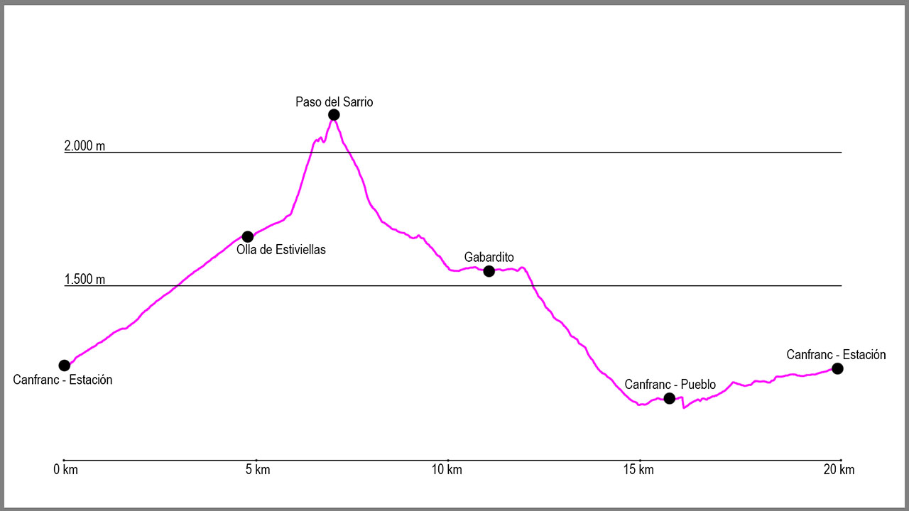

Desde el puente de la Estación de Canfranc, cruzaremos la carretera hacia la iglesia, y a su izquierda cogeremos un camino que sale al final de las escaleras de acceso a la misma. Seguiremos este camino hasta llegar a un pequeño puente con la barandilla verde que cruzaremos y nada más pasarlo a nuestra derecha sale un sendero. Lo tomaremos y justo en este punto empezaremos la principal subida de la ruta, bastante cómoda y sencilla.
Durante la subida saldrán dos cruces a nuestra derecha que obviaremos y seguiremos hasta llegar a los restos del vivero de Secras. Aquí continuaremos de manera ascendente por el camino para llegar a la Olla de Estiviellas. En este punto, un cartel nos marcará un desvío a nuestra izquierda hacia la “Fuente del Centenario”, el cuál tomaremos y ascenderemos hasta ella.
A partir de este punto el camino desaparece y deberemos de seguir las marcas de PR amarillas y blancas, aunque lo más interesante es tomar como referencia la parte de debajo de los Mallos de Lecherines, que tenemos justo encima nuestro en dirección oeste. Comenzaremos este tramo de ascensión para pasar poco después entre dos grandes diques y continuar la subida hasta llegar a unas redes metálicas que dejaremos a nuestra derecha, para poco después llegar al refugio del Sarrio.
Llegados hasta aquí, será muy importante extremar la precaución y seguir las marcas de PR. Primero atravesaremos una zona bastante cómoda para a mitad del paso coger una chimenea que de forma muy vertical son llevará hasta un depósito de gas para las avalanchas. Después de este punto ya solo nos quedará llegar hasta el pequeño collado que tenemos justo enfrente, donde tendremos que atravesarlo con cuidado debido al agujero que hay justo en él.
Aquí comienza la bajada hasta Canfranc-Pueblo. La primera parte transcurre por el valle que sale delante de nosotros y es toda una pedrera kárstica. El firme es bastante irregular y no nos dejará avanzar con rapidez, pero si seguimos los hitos rápidamente llegaremos a mitad del primer tramo de bajada y el sendero mejora.
Descenderemos siempre por la misma canal en dirección sur hasta dar vista a la majada de Lecherines. Aquí las piedras desaparecen y divisaremos un pequeño edificio hacia el que nos dirigiremos y donde podremos coger agua. A partir de este punto seguiremos en dirección sur siguiendo las marcas de GR hasta atravesar el barranco del Campón y entrar en el bosque. Desde aquí la bajada es cada vez más cómoda y sin dificultar alguna, hasta que lleguemos al barranco de la Añaza. Lo cruzaremos en dirección sur, para tras subir la salida del mismo continuar recto obviando las marcas de GR.
Tras unos 300 metros donde el camino no está muy claro, llegaremos a una zona de bosque donde lo podremos seguir sin dificultad. El camino mantiene altura durante un buen rato antes de llegar a una antigua acequia, donde la atravesaremos y rodearemos una zona llana con una gran roca a nuestra derecha.
Pasados este punto comienza nuestro descenso hasta el punto de inicio. Toda la bajada transcurre por un cómodo sendero que nos conducirá hasta el punto donde salimos en nuestra ascensión a la pista. Al llegar a ella giraremos a nuestra izquierda para apenas 10 metros después volver a girar a nuestra derecha y en este punto coger el camino que tras pasar de nuevo la fuente la Pajeta y el vivero de Los Meses nos llevará hasta Canfranc-Pueblo.
Justo antes de llegar tendremos que cruzar la carretera con precaución y entrar en el pueblo, para atravesarlo por la calle principal de sur a norte y llegar al puente de arriba del pueblo. Aquí cogeremos la pista que sale justo delante de nosotros y apenas 500 metros más adelante cogeremos el desvío que sale a nuestra izquierda en dirección descendente y seguir las marcas de GR en dirección norte.
Este tramo de recorrido no tiene pérdida alguna, y poco a poco nos llevará hasta la presa de Ip, donde subiremos hasta la carretera y donde iremos por el arcén hasta el punto de salida en el puente de la Estación de Canfranc.
